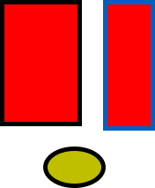

webpdf is a lightweight HTML‑to‑PDF library written in C++. It renders HTML content into high‑quality PDF documents without relying on a browser engine. Instead, it parses HTML and CSS directly and generates PDF instructions, resulting in fast startup times and low memory usage.
This library is particularly well‑suited for:
• Server‑side batch generation of PDF reports and documents
• PDF generation in embedded systems
• Applications that require precise control over PDF output
• Environments with strict startup speed and memory constraints
| Feature | Description |
|---|---|
| HTML Parsing | Supports common HTML tags and CSS styles |
| Chinese Support | Full support for TrueType Chinese fonts |
| SVG Rendering | Supports vector graphics and gradient fills |
| Automatic Pagination | Smart page breaks; table headers repeat across pages |
| Headers & Footers | Custom headers/footers with page number placeholders |
| Table of Contents | Auto‑generated TOC with page numbers and clickable links |
| Full‑Page Images | Use class="pagefull" for full‑page rendering |
The project uses a Makefile build system. Ensure g++ and make are installed. In the project root, run:
cd webpdf make
After a successful build, the test_html executable will be generated.
Run the test program; it reads content.html and outputs output.pdf by default:
./test_html
You can also specify input and output files:
./test_html input.html output.pdf
Here is the most basic HTML file, containing only a title and a paragraph:
<!DOCTYPE html>
<html>
<head>
<meta charset="utf-8">
<title>Hello</title>
<style>
body {
font-family: msyh;
font-size: 24px;
}
</style>
</head>
<body>
<h1>Hello, webpdf!</h1>
<p>This is my first PDF document.</p>
</body>
</html>
webpdf supports setting fonts and sizes via CSS. Before using a font, you must register it using the C++ API method AddFont().
Example:
body {
font-family: "Microsoft YaHei";
font-size: 24px;
}
Use the <b> or <strong> tags for bold text, and <i> or <em> for italic text. You can also combine them: bold italic.
Use the <u> tag for underlined text. Use <font color="..."> to set text color, e.g. red, green, blue.
This is left‑aligned text. Left aligned text. Mixed Chinese and English display.
This is center‑aligned text. Center aligned text.
This is right‑aligned text. Right aligned text.
Line‑height controls the vertical spacing between lines. Appropriate line‑height improves readability. Generally, a value of 1.2 to 1.5 times the font size works well.
This paragraph has a small line‑height (20px) with font‑size 14px. The text looks rather compact, suitable for space‑constrained scenarios. But too small a line‑height can slow reading and cause eye fatigue. So it's not recommended for long body text.
This paragraph has a large line‑height (40px) with font‑size 18px. The generous spacing makes reading comfortable, especially for long articles, as readers can easily track each line. Many technical manuals and books use relaxed line‑height.
Use the <table> tag to create tables. Add border="1" to show borders.
| Product Name | Price | Stock |
|---|---|---|
| Web Development Framework | ¥299 | 128 |
| Mobile App Component Library | ¥499 | 56 |
| Enterprise Management System | ¥1999 | 12 |
Cell content can be aligned both horizontally and vertically:
| Left | Center | Right |
|---|---|---|
| Left aligned | Centered | Right aligned |
|
Top aligned second line third line |
Middle aligned | Bottom aligned |
Use colspan to merge columns and rowspan to merge rows.
| Product Information | Price Details | |
|---|---|---|
| Software Products | Basic Edition | ¥99 |
| Professional Edition | ¥299 | |
| Enterprise Edition | ¥999 | |
| Services | Technical Support | ¥499/year |
| Custom Development | Hourly rate | |
| hardware support | Allocate servers according to projects | |
When a table is long and spans multiple pages, add style="position: fixed" so that the header repeats automatically on every page for easier reading.
| Feature Module | Basic | Professional |
|---|---|---|
| Total Features | 12 items | 28 items |
| User Management | ✓ Supported | ✓ Supported |
| Role & Permissions | ✓ Basic | ✓ Full |
| Data Reporting | ✓ Basic reports | ✓ Advanced reports |
| Export | ✓ Excel | ✓ Excel/PDF/Word |
| Notifications | ✗ Not supported | ✓ Supported |
| Workflow Engine | ✗ Not supported | ✓ Supported |
| API Interface | ✓ Basic | ✓ Full |
| Third‑party Integration | ✗ Not supported | ✓ Supported |
| Data Backup | ✓ Manual | ✓ Automatic |
| Operation Logs | ✓ Basic | ✓ Full audit |
| Multi‑language | ✗ Not supported | ✓ Supported |
| Mobile Adaptation | ✗ Not supported | ✓ Supported |
| Technical Support | Community | 24/7 dedicated |
| Upgrade Service | Minor updates | All versions |
| Custom Development | ✗ Not supported | Optional |
| Deployment | Public cloud | Public / Private |
| SLA Guarantee | 99% | 99.9% |
| Data Migration | ✗ Not supported | ✓ Supported |
| Training Service | Online docs | On‑site training |
| Security Certification | Basic | Class‑III (China) |
| Performance Tuning | Standard | Deep optimization |
| Plugin Marketplace | ✗ Not supported | ✓ Supported |
| Open Platform | ✗ Not supported | ✓ Supported |
| Multi‑tenancy | ✗ Not supported | ✓ Supported |
| BI Analytics | ✗ Not supported | ✓ Supported |
| AI Assistant | ✗ Not supported | ✓ Optional |
| Price (per year) | ¥2,999 | ¥9,999 |
webpdf supports common raster formats like PNG and JPG. Insert images using the <img> tag:
SVG (Scalable Vector Graphics) scale without loss, making them ideal for charts and icons. You can reference SVG files via <img>, or embed SVG code directly in HTML.

Embedding SVG directly in HTML gives you finer control:
webpdf supports both linear and radial SVG gradients.
A linear gradient transitions colours along a straight line:
A vertical linear gradient:
A radial gradient radiates from a central point, ideal for spheres and glow effects:
SVG supports various basic shapes and path drawing:
Sometimes you need to force a page break at a specific location. Use the page-break-before: always style:
<div style="page-break-before: always;"></div>
This empty div will not produce any visible content, only trigger a page break.
Use class="pagefull" to make an image occupy the entire page, without headers, footers, or margins. The image will be scaled and centered proportionally.
<p class="pagefull"><img src="images/fullpage.png"></p>
Here is a full‑page PNG image:
The image above fills an entire page, with no header or footer. Now we are on a new page, headers and footers are back to normal.
SVG images can also be full‑page:
This is another new page, with headers and footers visible. The full‑page feature is perfect for covers, illustrations, charts, or any content that deserves a whole page.
pagefull class can be applied to any container; the first <img> inside will be used for full‑page rendering, while the container itself and any other children will not be displayed.
Use <div> to create block containers with background colours, borders, rounded corners, etc.:
This is a blue‑themed info box. Use it for important messages, notes, etc.
This is a warning box with a prominent red left border.
A container with a background image, rounded border, and padding.
Use the <a> tag to create hyperlinks; in the PDF, clicking them will open the URL. For example, visit Example Website for more info.
Long links wrap correctly: https://www.example.com/very/long/path/to/document.html?query=value¶m=test&foo=bar&baz=qux
Use the <hr> tag to insert horizontal rules for separating content:
Default style:
Red thick rule:
Green dashed rule:
Blue dotted rule, 50% width centered:
Orange short rule, right‑aligned:
Use class="pageheader" and class="pagefooter" to define custom headers and footers for every page. This document uses them.
Two special placeholders are available in headers/footers:
| Placeholder | Description |
|---|---|
{pagenum} |
Current page number |
{pagetotal} |
Total page count |
pagefull) pages also hide them.
webpdf can automatically generate a table of contents. Add class="catalogue1", catalogue2, or catalogue3 to headings to include them in the TOC.
| Class Name | TOC Level | Corresponding Headings |
|---|---|---|
catalogue1 |
Level 1 | h1 ~ h3 |
catalogue2 |
Level 2 | h4 ~ h5 |
catalogue3 |
Level 3 | h5 ~ h6 |
The generated TOC includes page numbers and clickable links to each section.
Use class="pagecover" to create a cover page. Cover pages have no headers/footers and content starts from the top of the page.
Use class="pagecatalogue" for a TOC background, combined with class="cataloguecontent" to auto‑insert the TOC.
FPDF is the core PDF document class, used to create and manipulate PDF files.
| Method | Description |
|---|---|
| FPDF() | Constructor – creates a new PDF document |
| AddPage() | Adds a new page |
| AddFont(family, style, file, dir) | Registers a font file |
| SetFont(family, style, size) | Sets the current font |
| WriteHTML(html, line_height) | Renders HTML content into the PDF |
| Output(dest, name) | Outputs the PDF file |
| SetShowHeader(show) | Enables/disables header display |
| SetShowFooter(show) | Enables/disables footer display |
| SetShowHeaderFooter(show) | Sets both header and footer visibility |
| PageNo() | Returns the current page number |
| SetPageNumberOffset(offset) | Sets a page number offset |
| SetLeftMargin(margin) | Sets left margin |
| SetRightMargin(margin) | Sets right margin |
| SetTopMargin(margin) | Sets top margin |
| SetAutoPageBreak(auto, margin) | Configures automatic page breaking |
| GetPageWidth() | Returns page width |
| GetPageHeight() | Returns page height |
| GetX() / GetY() | Returns current X/Y coordinates |
| SetXY(x, y) | Sets current position |
| Image(file, x, y, w, h) | Inserts an image |
| Rect(x, y, w, h, style) | Draws a rectangle |
| SetFillColor(r, g, b) | Sets fill colour |
| SetDrawColor(r, g, b) | Sets stroke colour |
| SetTextColor(r, g, b) | Sets text colour |
| SetLineWidth(width) | Sets line width |
| AddAxialShading(...) | Adds an axial (linear) gradient |
| ShadeFill(x, y, w, h, id) | Fills a rectangle with a gradient |
#include <iostream>
#include <fstream>
#include <sstream>
#include <string>
#include "fpdf.h"
std::string read_file(const std::string& path) {
std::ifstream f(path);
if (!f.is_open())
throw std::runtime_error("Cannot open file: " + path);
std::stringstream ss;
ss << f.rdbuf();
return ss.str();
}
int main(int argc, char* argv[]) {
try {
std::string html_file = "content.html";
std::string pdf_file = "output.pdf";
if (argc > 1) html_file = argv[1];
if (argc > 2) pdf_file = argv[2];
std::string html = read_file(html_file);
webpdf::FPDF pdf;
pdf.AddPage();
pdf.AddFont("msyh", "", "msyh.ttf", "font/");
pdf.SetFont("msyh", "", 14);
pdf.WriteHTML(html);
pdf.Output("F", pdf_file);
std::cout << "PDF generated: " << pdf_file << std::endl;
return 0;
} catch (const std::exception& e) {
std::cerr << "Error: " << e.what() << std::endl;
return 1;
}
}
| Problem | Solution |
|---|---|
| Chinese characters appear as boxes or garbled | Ensure you have registered a Chinese font with AddFont() and that the font-family in CSS matches exactly |
| Font weight (bold) does not work | You must register a separate font file for that weight; webpdf does not simulate bold automatically |
| Line wrapping is incorrect | Check for special characters or spaces; Chinese wraps based on character width |
| Problem | Solution |
|---|---|
| Images do not appear | Check that the image path is correct and relative to the program's working directory |
| SVG renders as black | Verify SVG syntax; gradients must be defined inside <defs> |
| SVG gradients show incorrectly | Ensure the gradient ID is correct and referenced as url(#id) |
| Problem | Solution |
|---|---|
| Blank page before a forced page break | Use an empty <div style="page-break-before: always;"></div> without any content inside |
| Table header does not repeat across pages | Add style="position: fixed" to the <table> tag |
| Full‑page image still shows headers/footers | Make sure class="pagefull" is on the container and it contains an <img> child |
| Problem | Solution |
|---|---|
| TOC page numbers are incorrect | TOC page numbers are estimated; complex layouts may cause slight deviations |
| Some CSS styles do not apply | webpdf supports only a subset of common CSS properties; check the supported list in the tutorial |
| Generated PDF file is too large | Use compressed images and avoid large raster images where possible |